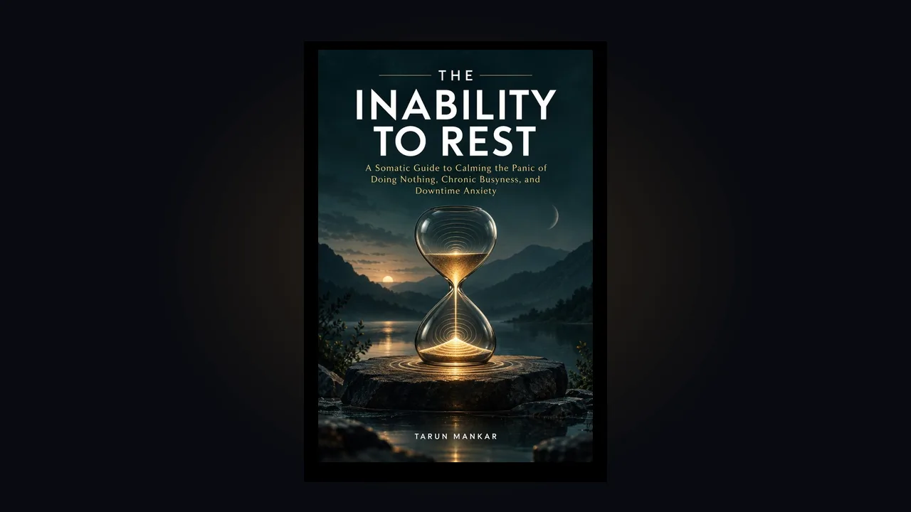
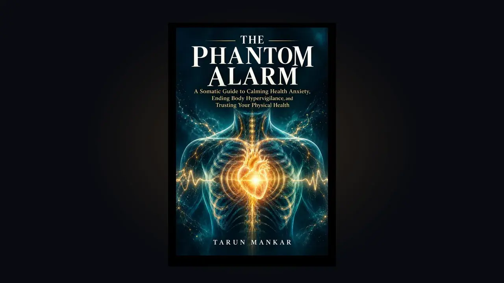

Articles & Resets
Practical neurobiology, 60-second body-first resets, and attachment tools grounded in lived experience.
Sent a Text 45 Minutes Ago and Your Chest Is Burning? The Attachment Threat Loop
Why your body treats unanswered messages as an evolutionary survival emergency — and the 60-second somatic reset to calm an acute attachment panic.
Why That 3 PM Espresso Is Making Your Brain Fog Worse (And the Vagus Reset)
Physically exhausted yet mentally wired at your desk? Discover the neuroscience of sympathetic freeze, why caffeine accelerates burnout, and the 60-second vagus reset.
Checking Your Bank App Makes You Physically Sick? Financial Threat Alarms
Why no budgeting app can fix a nervous system stuck in financial panic — and the 60-second somatic reset to expand your body's capacity to hold wealth.
Why You Can't Read 3 Pages Without Touching Your Phone: Dopamine Depletion
Your attention isn't broken — it was engineered into starvation. Discover why willpower cannot beat algorithms, and the 60-second somatic focus reset.
Why Saying 'No' Feels Like a Heart Attack: The Neuroscience of the Fawn Response
Saying yes when every fiber of your body screams no? Discover why people-pleasing is an autonomic survival response and the 60-second throat reset.
A Subtle Shift in Their Tone and Your Stomach Drops? Relationship Hypervigilance
Why your nervous system scans micro-expressions for abandonment — and the 60-second somatic grounding protocol to build earned secure attachment.
Minor Annoyances Make Your Blood Boil in Seconds? The Neuroscience of Emotional Flooding
Why your body floods with rage before your logical prefrontal cortex can speak — and the 90-second thermal vagus reset to cool down explosive reactivity.
Why You Keep Delaying: The Neurobiology of the Procrastination Freeze Response
Procrastination is not laziness, lack of willpower, or poor time management — it is an autonomic dorsal freeze response. Discover how to thaw task resistance.
Looking for Full Daily Toolkits?
Explore all 8 published body-first books in The Somatic Library covering anxious attachment, burnout, emotional storms, procrastination, and deep focus.
Explore Complete Book Catalog ↗Why You Feel Emotionally Numb Even When Life Looks Fine (Functional Freeze)
Functioning on the outside, completely numb and detached on the inside? Discover the neurobiology of dorsal vagal functional freeze and the 60-second thawing reset.

Why Sitting Still Makes Your Chest Tighten (The Overdrive & Downtime Panic)
Feel restless, guilty, or anxious the moment you try to relax? Learn why a hypervigilant nervous system treats stillness as danger and how to calm rest guilt.
Why You Wake Up at 3 AM With a Racing Heart & Unexplained Dread
Waking up between 2 AM and 4 AM with a pounding heart and racing thoughts? Discover the nocturnal cortisol loop and the 60-second in-bed somatic reset.
Why One Small Mistake Makes You Feel Worthless for Days (Somatic Shame Collapse)
One tiny typo or mild criticism makes your whole chest cave in? Understand the physiology of toxic shame collapse and the 60-second somatic restoration reset.

Why Every Small Body Ache Triggers Health Panic (Somatic Hypervigilance)
One random chest twinge or dizzy spell sends you spiraling into worst-case searches? Understand somatic hypervigilance and how to calm the false body alarm.
Why Socializing Leaves You Exhausted & Replaying Conversations for Hours
Feel wiped out and haunted by post-event rumination after dinner or work calls? Discover the somatic cost of social masking and how to end the replay loop.